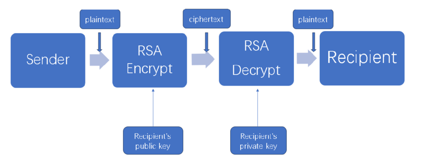
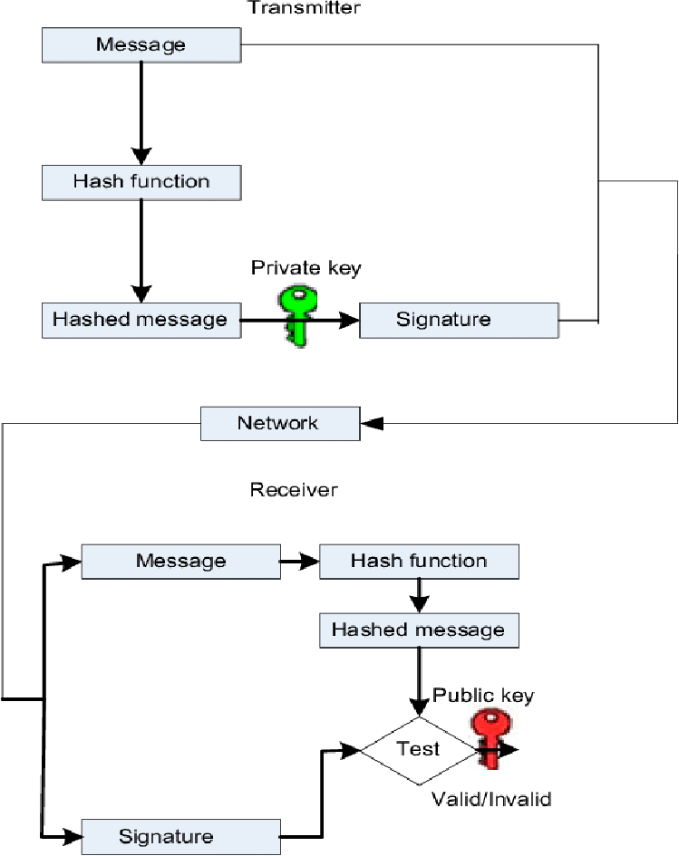
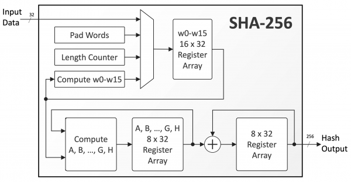

How Encryption Protects You
Every time you send a message, log into a website, or save a file in the cloud, encryption works behind the scenes to keep your information safe.
Messaging Apps: Apps like WhatsApp, iMessage, and Signal use end-to-end encryption so that only you and your recipient can read your messages—not even the app itself can peek.
Image credit: Dreamstime
Websites: The padlock icon in your browser indicates that you're using HTTPS, which combines HTTP with Transport Layer Security (TLS) to encrypt data transmitted between your browser and the website. This encryption prevents eavesdropping and tampering with the data in transit.
Cloud Storage & Banks: Services like Google Drive and Dropbox encrypt your files to protect them from unauthorized access. Banks use encryption to secure your transactions and account data. Password managers such as Bitwarden and 1Password rely on advanced algorithms like AES-256 to safeguard your credentials.
Image credit: RingCentral
Encryption in Action
Encryption is integral to modern digital life. It secures biometric data like Face ID, protects location history, and ensures that sensitive information, such as credit card details, remains confidential during online transactions.
Modern encryption employs complex mathematical algorithms to safeguard data. Key algorithms include:
-
RSA (Rivest–Shamir–Adleman): A widely used public-key encryption method based on the computational difficulty of factoring large prime numbers.
RSA is fundamental in securing data transmissions and digital signatures.

Image credit: ResearchGate
-
ECC (Elliptic Curve Cryptography): Offers similar security to RSA but with smaller key sizes, making it efficient for devices with limited computing power. Elliptic Curve Cryptography is increasingly adopted in mobile and IoT devices.
Image credit: ResearchGate
-
SHA-256 (Secure Hash Algorithm 256-bit): A cryptographic hash function that ensures data integrity by producing a unique fixed-size 256-bit (32-byte) hash. It's widely used in blockchain technologies and digital certificates.

Image credit: ResearchGate

Understanding these algorithms provides insight into the mechanisms that protect our digital communications, financial transactions, and personal data in the modern world.
Where You Can Go Next
If encryption excites you, there's so much more to learn:
- Cybersecurity: Protecting networks, writing secure code, penetration testing.
- Cryptography: Studying and designing new ciphers, learning about public/private key systems.
- Ethical Hacking: Using your skills to expose vulnerabilities and improve security.
From Caesar to Vigenère, you've built a foundation. What comes next? Algorithms like RSA, zero-knowledge proofs, blockchain cryptography, and even quantum encryption.
Keep going. You're just getting started.

Image credit: CM Alliance